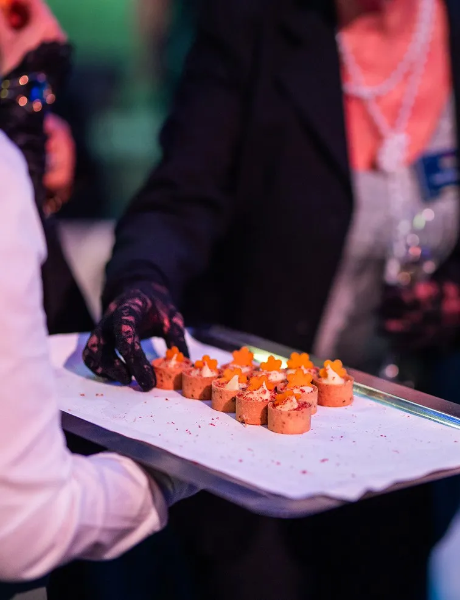
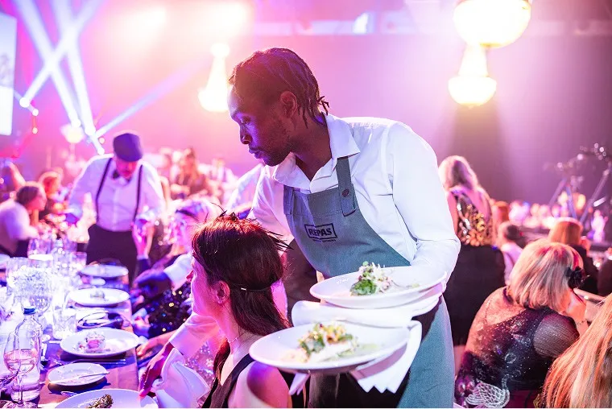
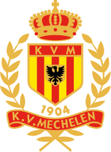
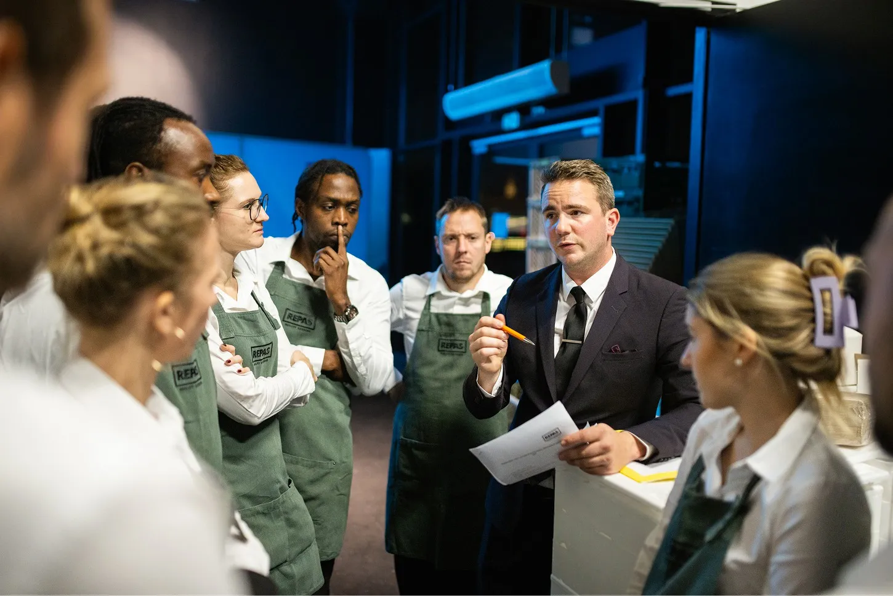
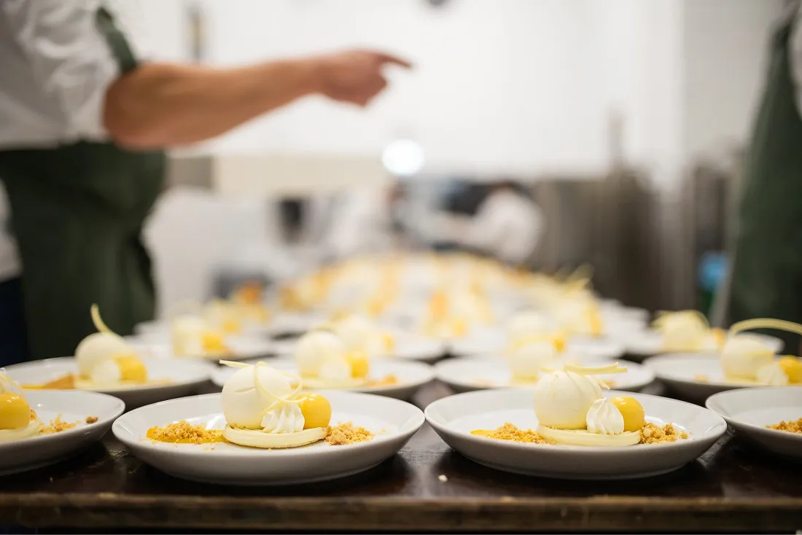
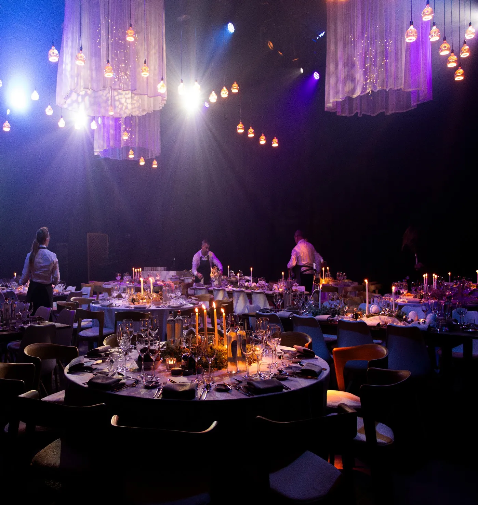
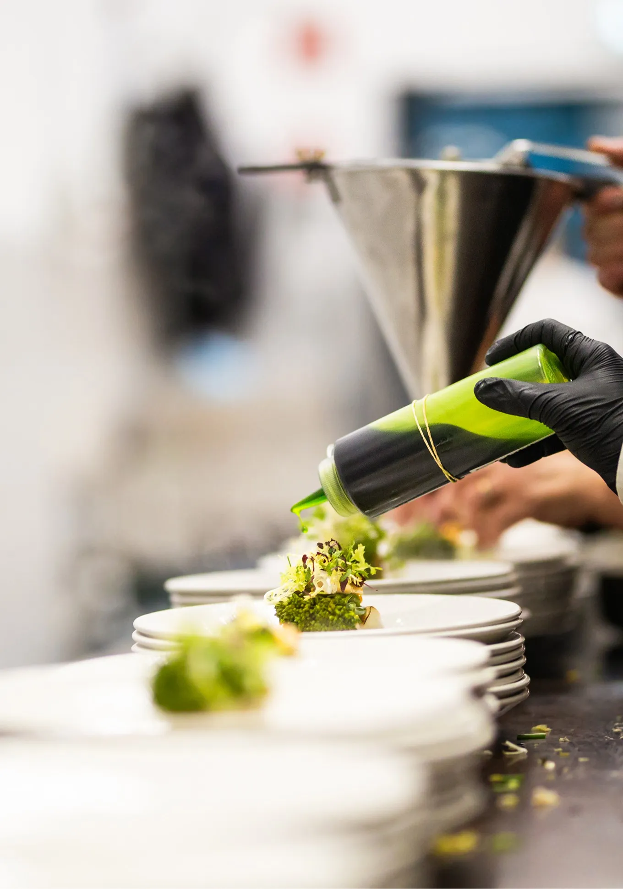
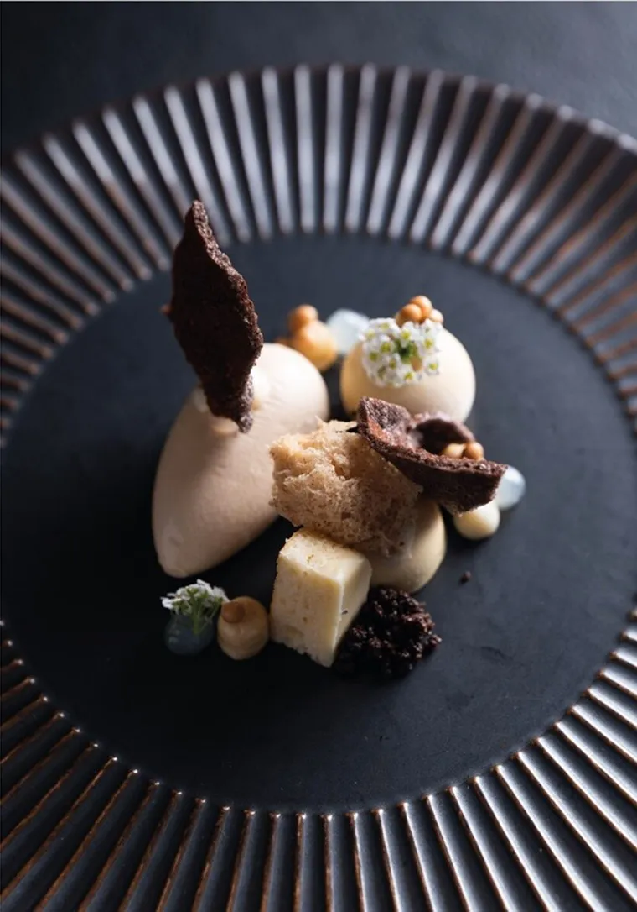
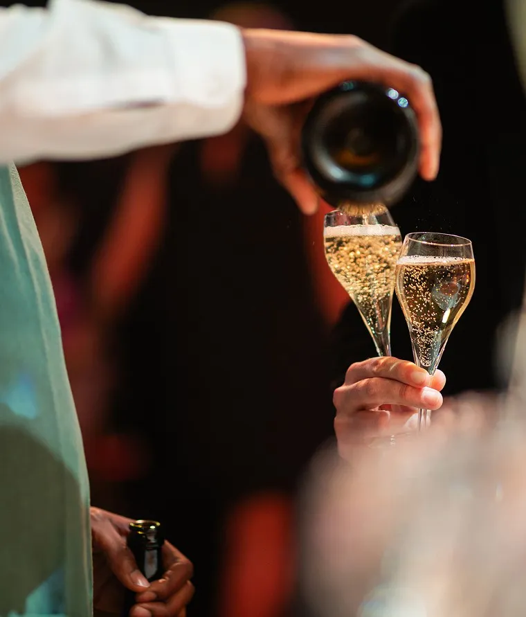
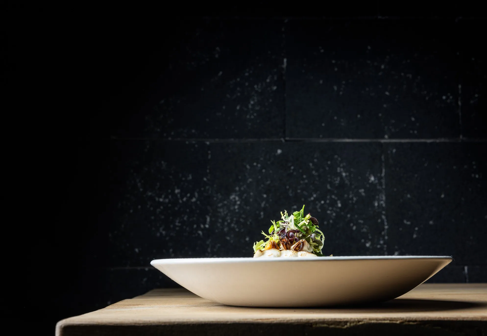

Receptie
Verfijnde hapjes die rondgaan terwijl je gasten elkaar ontmoeten.
Bedrijfsevents
Personeelsfeest, opening of congres. Wij denken mee, van de eerste babbel tot de laatste gast.



Je wilt geen standaardpakket. Wij ook niet. We kunnen grote events aan en blijven toch wendbaar.
Geen vast concept waar je in moet passen. Wel een voorstel dat bij jouw event, je gasten en je budget past.
Of je nu je team bedankt of klanten ontvangt op je stand: we zorgen voor eten dat bij de gelegenheid past.
Een avond voor je hele team, van receptie tot diner aan tafel.
Een nieuwe vestiging of zoveel jaar bestaan. Dat vier je samen.
Ontbijt, lunch en avond in één verhaal, ook over meerdere dagen.
Klanten ontvangen op je stand, ook drie dagen na elkaar. Denk aan het autosalon.
Je relaties ontvangen zoals je zelf ontvangen wilt worden.
Van een receptie met hapjes tot een diner van vier gangen. Alles wordt in onze eigen keukens bereid.

Verfijnde hapjes die rondgaan terwijl je gasten elkaar ontmoeten.

Kleine gerechten na elkaar, staand of als walking buffet. Ideaal om te netwerken.

Drie of vier gangen, geserveerd aan tafel door ons eigen team.

De keuken tussen je gasten. Koken wordt zo een deel van het feest.
Geen burgerstand, wel een uitgeholde parmezaan met pasta en zwarte truffel.

Nog een niveau hoger, met de sterrenchefs van Repas Exclusive.
Ontdek Repas ExclusiveEen chef die zijn gerecht komt toelichten. Live cooking tussen je gasten. Zulke momenten blijven hangen, en ze hoeven niet altijd veel te kosten. Daarom zoeken we ook de samenwerking op met bekende Belgische chefs.

Klanten noemen het een verademing. We komen zelf met voorstellen en zoeken oplossingen, ook als het budget per event verschilt.
Onze naam klinkt in de cateringwereld. Je weet wat je krijgt.
Opgeleid personeel, hulp bij de locatie en vaste partners voor aankleding, meubilair, licht, geluid en bloemen.
Seizoensgebonden en onbewerkte producten, zo kort mogelijk in de keten. Zero waste en zonder plastic.
“Wat een feestjes waren het! Dankjewel voor jullie inzet en enthousiasme – jullie maken het verschil!”
Je vertelt over je event, je gasten en wat je voor ogen hebt.
We komen met een voorstel, en met ideeën waar je zelf nog niet aan dacht.
Op de dag zelf zorgt ons team ervoor dat alles vlot verloopt.
In heel België. Het meeste tussen Gent, Antwerpen en Brussel, maar evengoed in Oostende of Hasselt.
Nog geen locatie? Bekijk onze partnerlocaties.

Een verkennend gesprek?
Klinkt goed!
Ik wil graag nog wat ontdekken, zoals...
We nemen zo snel mogelijk contact met je op!
...of neem zelf contact op
015 42 43 44
info@repascatering.be